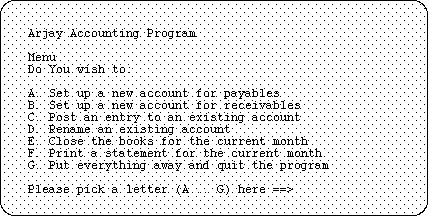

Our major illustration on the use of strings is their application to the printing of menus for the users of various programs. A programmer of text-based applications frequently wishes to present screens of information such as the following:

A pleasing screen layout like the one shown here gives the final product a professional look and feel, but takes time to achieve. (Of course, there are more sophisticated menus available under graphical user interfaces such as the Macintosh operating system, but employing these is a more advanced topic.) Since such menus commonly appear even in short programs, and there may be many of them in a larger piece of work, it is worthwhile to attempt to automate the process of creating such screens and obtaining the user's response.
Much of what is in the menu above is standard from one program to another or from one portion of a program to another. The layout of the information on the screen and the code to accept and check the validity of the user's choice does not change from one instance of a menu to another. Only the name of the program and the number and wording of the choices varies--otherwise the menus are handled in a very similar manner in each instance.
It is worthwhile, therefore to treat the printing of a menu as an abstract task in itself, encapsulating the necessary procedures in a utility module that takes the client programs' collection of menu strings, prints them in the form shown above, and then obtains and checks the user response. For the sake of simplicity, the implementation below makes the following assumptions:
a. The screen is eighty characters wide and twenty-four lines high.
b. The material is to be centred on the screen in a field whose width is determined by the length of the longest menu string passed to the menu printer and whose height is determined by the number of choices to print. The remaining space around all sides is to be blank.
c. The user is required to keep trying if no valid input is given in response to the prompt.
d. Data is fed to the main printing menu in the form of an appropriate array of strings, with the title of the menu first.
e. The routine to accept the user's response and check it to ensure that it is correct is a separate procedure.
With all this in mind, here is the definition for a menu handler module:
DEFINITION MODULE MenuHandler;
(* by R. Sutcliffe
revision date 1993 04 06 *)
CONST
MaxMenuItems = 14;
TYPE
MenuStringType = ARRAY [0 .. 76] OF CHAR;
(* ensure there is room on screen for longest possible one *)
MenuType = ARRAY [0 .. MaxMenuItems] OF MenuStringType;
(* leaves nine lines for the other material on the screen *)
PROCEDURE PrintMenu (VAR menu : ARRAY OF MenuStringType);
(* prints a menu on the screen
pre: the parameter has been initialized with the title (first) and the items following. If not all MaxMenuItems items after the title are used, the last one must be the empty string.
post : the menu is printed *)
PROCEDURE GetUserChoice ( ) : CHAR;
(* pre: none
post: a character corresponding to a menu choice is returned *)
END MenuHandler.
The user interface has been kept very simple. Part of this simplicity is ensured by requiring that the user employ entities of the MenuStringType type. This means that it will be easy for the code in the implementation to determine the number of items in the menu.
Now, for the actual code. It is written so that the screen format outlined in the initial example is followed. That is, the sample menu illustrated above has been taken as specifying the behaviour of the procedures in this library module. Notice also that certain simple tasks have been off-loaded from the main procedures and implemented using small local (non-exported) routines.
IMPLEMENTATION MODULE MenuHandler;
(* by R. Sutcliffe
revision date 1993 04 06 *)
FROM STextIO IMPORT
ReadChar, WriteString, WriteLn, WriteChar, SkipLine;
CONST
spc = " ";
cString1 = "Please pick a letter (A .. ";
cString2 = ") here ==>";
screenHeight = 24;
screenWidth = 80;
VAR
numberOfItems: CARDINAL;
mString, dString, pString : ARRAY [0..42] OF CHAR;
(* First, a couple of local (non-exported) procedures. *)
PROCEDURE WriteSpace (numOfSpaces: CARDINAL);
(* This procedure writes the specified number of blank spaces. *)
VAR
count: CARDINAL;
BEGIN
FOR count := 1 TO numOfSpaces
DO
WriteChar (spc)
END
END WriteSpace;
PROCEDURE WriteLines (numOfLines: CARDINAL);
(* This procedure writes the specified number of blank Lines. *)
VAR
count: CARDINAL;
BEGIN
FOR count := 1 TO numOfLines
DO
WriteLn
END
END WriteLines;
PROCEDURE FindFieldWidth (VAR menu: ARRAY OF MenuStringType): CARDINAL;
(* examines all the strings in the menu set and determines which is the longest *)
VAR
max, count: CARDINAL;
BEGIN
(* first, set the maximum to the Length of the last or put away choice. *)
max := LENGTH (pString);
FOR count := 0 TO HIGH (menu)
DO (* Then see if one of the ones passed is longer. *)
IF LENGTH (menu [count]) > max
THEN
max := LENGTH (menu [count])
END
END;
RETURN max + 3
(* Room also needed for the letter index at the left. *)
END FindFieldWidth;
PROCEDURE PrintCentred (VAR str: ARRAY OF CHAR);
(* print a string centered on an 80 column screen *)
VAR
leftMargin : CARDINAL;
BEGIN
leftMargin := (screenWidth - LENGTH (str)) DIV 2;
WriteSpace (leftMargin);
WriteString (str);
END PrintCentred;
(* The main procedures for this module. *)
PROCEDURE PrintMenu (VAR menu : ARRAY OF MenuStringType);
VAR
count, fieldWidth, fieldHeight, spaceToLeave: CARDINAL;
BEGIN
(* LENGTH is used here because HIGH will always give back MaxMenuItems
for menu because it is declared as an ARRAY [0 .. MaxMenuItems] *)
numberOfItems := 0;
WHILE (numberOfItems <= MaxMenuItems) AND (LENGTH (menu [numberOfItems]) > 0)
DO
INC (numberOfItems)
END; (* while count the number of menu items to print out *)
DEC (numberOfItems);
(* to get the correct number {because we start at 0} *)
fieldHeight := numberOfItems + 9;
(* It needs room for the last choice "Quit" plus headings, blank lines, and the line for the choice at the end. *)
fieldWidth := FindFieldWidth (menu);
spaceToLeave := (screenWidth - fieldWidth) DIV 2;
(* Print the headings *)
WriteLines ( (screenHeight - fieldHeight) DIV 2 );
PrintCentred (mString);
WriteLines (2);
PrintCentred (menu [0]);
WriteLines (2);
PrintCentred (dString);
WriteLines (2);
(* Now print the menu items *)
FOR count := 1 TO numberOfItems
DO
WriteSpace (spaceToLeave);
WriteChar (CHR (ORD ("A") + count - 1));
(* letter for this choice *)
WriteString (". ");
WriteString (menu [count]);
WriteLn;
END;
count := numberOfItems + 1;
WriteSpace (spaceToLeave);
WriteChar (CHR (ORD ("A") + count - 1));
WriteString (". ");
WriteString (pString); (* quit choice *)
WriteLines (2);
WriteSpace (spaceToLeave + 4);
WriteString (cString1);
WriteChar (CHR (ORD ("A") + count - 1));
WriteString (cString2);
END PrintMenu;
PROCEDURE GetUserChoice ( ) : CHAR;
VAR
answer: CHAR;
BEGIN
REPEAT
ReadChar (answer);
SkipLine;
answer := CAP (answer);
UNTIL (ORD (answer) >= ORD ("A")) AND
(ORD (answer) <= ORD ("A") + numberOfItems);
RETURN answer
END GetUserChoice;
BEGIN (* main body to initialize variables *)
(* These are made variables because one cannot pass a
constant as an array of char in a variable parameter *)
mString := "MENU";
dString := "Do you wish to:";
pString := "Put everything away and quit this program.";
END MenuHandler.
Notice that in this version, if a letter choice is typed that is out of the range of the correct choices, it is ignored and no action is taken. GetUserChoice will simply wait until a correct choice is typed. This behaviour could be changed.
The initial part of a suitable client program might include code like this:
MODULE ClientTestMenu;
FROM MenuHandler IMPORT
MenuType, PrintMenu, GetUserChoice;
VAR
actionToDo: CHAR;
menu: MenuType;
BEGIN
menu [0] := "Arjay Enterprises Word Processor";
menu [1] := "Enter the Editor";
menu [2] := "Enter the Runoff/Formatting subprogram";
menu [3] := "Enter the Communications Subprogram";
menu [4] := "Configure the Runoff/Formatting Subprogram";
menu [5] := "Configure the Communications Subprogram";
menu [6] := "Print a Catalog of the Disk";
menu [7] := "";
REPEAT
PrintMenu (menu);
actionToDo := GetUserChoice ( );
CASE actionToDo OF
'A':
(* put all choices and actions here
........ *)
| 'F': (* last one for program *)
| 'G' : (* corresponds to choice quit program *)
(* putEverythingAway; *)
ELSE
END;
UNTIL actionToDo = 'G'
(* goes forever unless last choice picked *)
END ClientTestMenu.
Observe that this test program is just a shell. It does not (yet) do anything but run and put up the menu. However, this is exactly the way one would proceed to write a large project. The shell would be written and the user interface tested and perfected. Then, the sections of the program corresponding to the individual menu choices would be implemented one at a time, with the unimplemented sections remaining as stubs until they were completed. In this way, the programmer always has a working program on hand, and the highest level portions of it (the menu) are tested many times during the tests of the lower level parts.